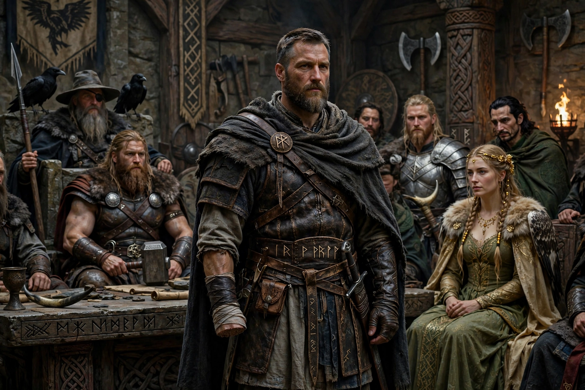

From Wikipedia, the free encyclopedia
| Týr | |
|---|---|
| Affiliation | Æsir; god of war, law and the assembly (thing) |
| Father | Odin (in the Prose Edda) or the giant Hymir (in Hymiskviða) |
| Known for | Losing his hand to the wolf Fenrir as pledge for the gods' good faith |
| Legacy | Tuesday ('Týr's day'); the rune Tiwaz (↑) |

Týr (Old Norse Týr, Old English Tīw, from Proto-Germanic Tīwaz) is a god of Norse mythology associated with war, law and the formal assembly. His name is the Germanic cousin of Zeus and Jupiter — all from the Indo-European sky-father *Dyēus — and he may once have been the chief god of the northern pantheon before Odin eclipsed him; Tacitus's account of the Germanic Mars is usually read as Týr. In the surviving myths he survives in a single great episode — the binding of Fenrir — which makes him the god of the costly pledge and of courage that pays for others' cunning.
When the gods brought the fetter Gleipnir to Fenrir, the wolf, smelling a trap, demanded that a god lay a hand in his mouth as a pledge the binding was honest. Only Týr stepped forward. The fetter held; the gods laughed; and Fenrir bit off the hand at the wrist — the "wolf-joint", as the sources dryly call the wrist ever after. The Eddas praise Týr's courage in the same breath as they record the gods' bad faith, and Loki's taunt in Lokasenna — that Týr could never again be a peacemaker, having one hand — cuts because it is true: the god of law keeps the receipt of the law's necessary injustice.
Týr appears as the brave god who fetches the giant Hymir's mile-wide cauldron for the gods' brewing (the errand on which Thor fished for Jörmungandr), and he is named among the gods who will fight at Ragnarök, where he and the hound Garm kill each other. His rune, Tiwaz — an upward arrow — was carved for victory, and his day is Tuesday, Týsdagr, in English, Norse and (as Ziestag's kin) German tradition.
Norse mythology · Fenrir · Odin · Heimdall · Loki